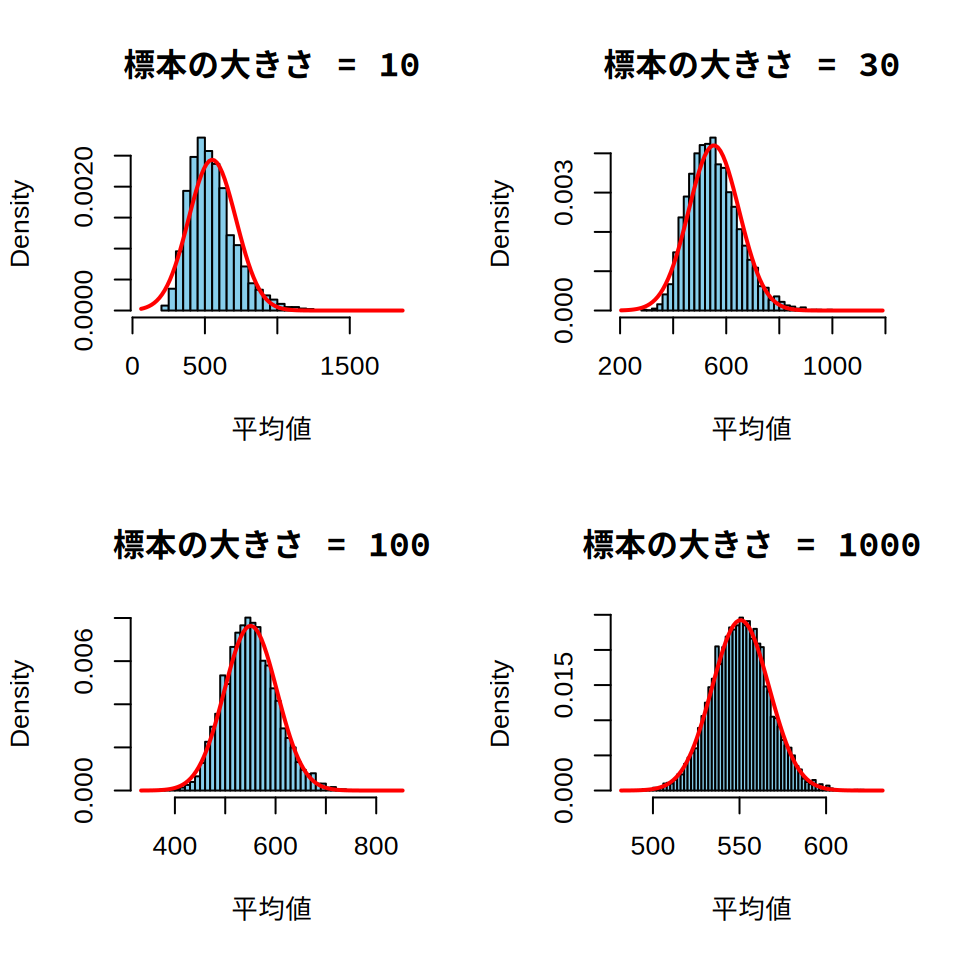
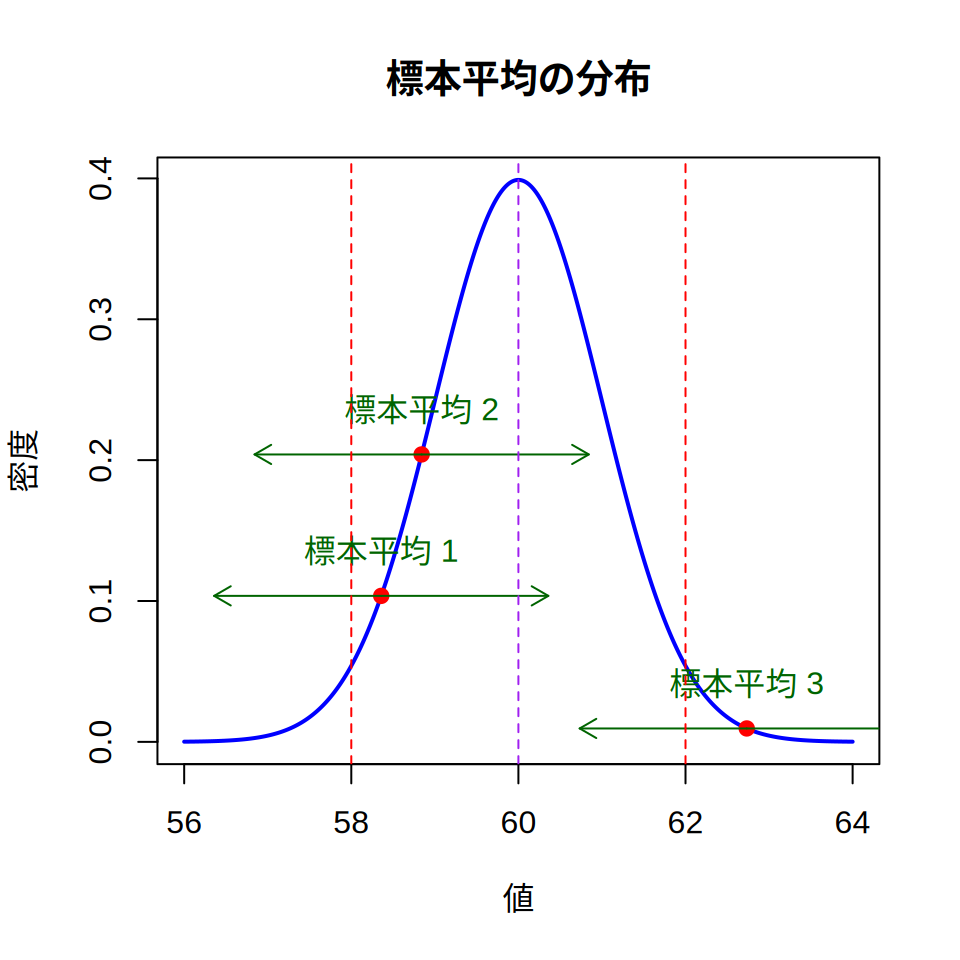

simdata <- rnorm(10000, 170, 7)
hist(simdata, main = "身長のヒストグラム", xlab = "身長", ylab = "度数")
abline(v = 170, col = "red")5 標本調査の基礎知識2
この章では，標本から母集団を推定する方法について学びます。 かなり難しいので，理解できなくても構いません。 とりあえず流し読みして次の章へ進み， 必要になったら戻ってくるという方針でよいと思います。
5.1 確率分布とシミュレーション
社会調査に限らず，統計学ではデータが何らかの規則に従っていると考えます。 たとえば20歳男性の身長を考えてみましょう。 政府統計によると， 20歳男性の身長はだいたい170cmです。 ですから，全国からランダムに選んだ20歳の男性の身長は170cm付近の人がもっとも多いと考えられます。 さらに平均身長から\(x\)cm低い人・\(x\)cm高い人の割合はほぼ同じと考えても支障はないでしょう。 ここでRを使って，20歳男性の身長のばらつきを視覚的に表現してみます。
なお，ここからRで図を書く機会が増えますが， 初期設定のままcolabで図を書くと，日本語が文字化けします。 日本語を表示するための設定を行ってから， 以下のコードを実行してください。
図 5.1 はrnormという関数を使い， 仮想の20歳男性の身長のデータを作成して描いた図です。 rnormは正規分布と呼ばれる規則に従って，ランダム1にデータを生成する関数です。 正規分布は 図 5.1 のような山形のデータの散らばり方を表現したもの（≒分布）で， いろいろと便利な性質を持つので統計学ではよく使われます。 正規分布以外にもベルヌーイ分布や二項分布といったさまざまな形の分布があり， これらを総称して確率分布と呼びます。 本書では正規分布を主に使いますが，統計の入門書では 正規分布以外の確率分布もしばしば登場します。
さてRの話に戻ると，rnormのカッコの中の10000・170・6の数値は， 順に生成するデータの数（10000個）・平均（170）・標準偏差（7）を意味します。 日本の20歳男性の身長は，だいたい平均170cm・標準偏差7cmなので， その情報に従って正規分布からデータを生成したのです。 生成したデータは，simdataというオブジェクトに格納しています。
次にhistは，ヒストグラムを書くための関数です。 histのカッコの中のmain・xlab・ylabは， それぞれ，グラフのタイトル（身長のヒストグラム），x軸のタイトル（身長）， y軸のタイトル（度数）を意味します。 いずれも，""を付けて文字にしていることに注意してください。 なお，度数は統計でよく使う用語で，「データの出現した回数」という意味です。
最後に，ablineという関数は，赤い縦線を引くための関数です。 ablineの中のv・colは，縦に線を引く位置（今回は170のところに線を引く） ・線の色（redは赤色）を意味します。
なお，関数のカッコの中の情報を，引数（ひきすう）と呼びます。 rnorm関数であれば，「生成するデータの数・平均・標準偏差を引数として設定する」わけです。 Rに限らず，プログラミングでは「引数を設定する」といった表現を使うので， 覚えておくとよいでしょう。
以上の手続きで，20歳男性の身長の分布を示すグラフが書けました。 もちろんこれは，「身長が正規分布という規則に従う」という仮定を置いて 描いたグラフですから，現実の身長の分布とは違っている可能性もあります。 ただ，このような仮定を置くと，仮のデータを生成し，いろいろな実験をすることが可能になります。 これをシミュレーションと呼びます。
今度は，学力テストの点数（平均50・標準偏差10）が正規分布に従うと仮定してみましょう。 先ほどと同じく，Rでrnorm(30, 50, 10)とすると， 30人分の点数を得ることができます。 ただ，rnorm関数で作成した数値は小数点以下も出力されるので， これをroundという関数を使って整数にしておきます。
rnormで作成したデータはランダムに生成されていますから，実行するたびに結果が変わります。 これでは困る（≒私の手元で実行した値と，皆さんが手元で実行した値が違ってしまう）ので， 今回は生成される値を固定します。 それが，set.seedという関数です。set.seed(123)という具合に使います。 カッコの中の数値は何でも構いません。 私は123を指定します。皆さんも123と指定すれば，以下の出力と同じ値が得られるはずです。 違う値を指定すれば（あるいはset.seedを省略すると）結果が変わってきますので，確認してみてください。
set.seed(123)
simscore <- round(rnorm(30, 50, 10))
simscore [1] 44 48 66 51 51 67 55 37 43 46 62 54 54 51 44 68 55 30 57 45 39 48 40 43 44
[26] 33 58 52 39 63mean(simscore)[1] 49.56667今回得られた標本の平均点は，約49.6点でした。 ここで考えてみたいのは， 「ランダムに各学級に30人を配置したら，それぞれの学級の平均点はどのくらいばらつくのだろうか」 ということです。 ランダムに生成したデータですから，その平均は毎回変わります。 もちろん平均50・標準偏差10という縛りがありますから， あまり50点から離れた値にはならないでしょうが， ランダムに生成しているので，稀には55点や45点といった値もでる気がします。
そこでデータを100回生成して，その平均点がどうなるか観察してみましょう。 ただ，rnorm(30, 50, 10)を100回も入力するのは大変です。 せっかくプログラミングをしているのですから，もっとスマートにやってみましょう。
ここで登場するのが，sapplyという関数です。 sapplyは，「与えたリスト（あるいはベクトル）に対して同じ処理を繰り返す」 関数になります。 親戚としてlapply関数があり，lapplyはリストを返し， sapplyはベクトルを返す2点が違います。 ちょっと難しいので，簡単な例を出しましょう。 今，lisというリストを考えます。 このリストの要素について平均をとることを考えましょう。
lis <- list(c(20, 30), c(30, 40), c(40, 50))
# lisの要素（20と30，30と40，40と50）のそれぞれについて平均を計算
sapply(lis, mean)[1] 25 35 45# lapplyはリストを返す
lapply(lis, mean)[[1]]
[1] 25
[[2]]
[1] 35
[[3]]
[1] 45lisは簡単なリストなので，あまりありがたみがわからないでしょうが， リストが複雑になればなるほど，sapplyやlapplyの有用性が活きてきます。
次に，numというベクトルを考えます。このベクトルの要素に， すべて2を足す（x + 2）ことを考えましょう。 ここではplusという「与えた数（x）に2を足す」という新しい関数を作って， それをsapplyに与えています3。
num <- c(1, 3, 5, 100)
plus <- function(x) {
x + 2
}
sapply(num, plus)[1] 3 5 7 102ただ，いちいちplusという関数を作るのは面倒なので， function以下を，そのままsapplyに与えても構いません。
sapply(num, function(x) {
x + 2
})[1] 3 5 7 102これを応用すると，先ほどの課題 （データを100回生成して，その平均を計算する） がクリアできます。sapplyに，「データを100回生成し，その平均を計算する」という処理を functionを使って与えればよいのです。 100回の生成を行い，その平均をヒストグラムにする処理は，以下のようになります。
set.seed(1234)
sim <- sapply(1:100, function(x) {
simscore <- round(rnorm(30, 50, 10))
mean(simscore)
})
hist(sim, main = "100学級の平均点のばらつき", xlab = "平均点", ylab = "度数")図 5.2 を見ると，ランダムに30人を各学級に配置したとき， 学級の平均点が48点や52点になることは珍しくないということがわかります。 中には54点や46点に近い値になる学級もあるようです。 それ以上に大きな（あるいは小さな）値がでることは稀ですが， 図 5.2 でも44点が1回出ています。
ここからわかることは，学力テストの平均点が3〜4点程度違っても， それは教員の指導力を反映したものではない（かもしれない） ということです。 仮に一人ひとりの子どもの成績が平均50・標準偏差10の正規分布に従うのであれば， 30人の学級の平均点は3〜4点程度は簡単に変動するのです。
もちろんこのシミュレーションは， 点数が平均50・標準偏差10の正規分布に従うという前提を置いた上での結果です。 ですから点数が正規分布以外の分布に従っていたり，正規分布の平均や標準偏差が違ったりすれば， また違った結果になることが予想できます。 気になる人は，rnorm関数の引数を変更して，いろいろ調べてみるとよいでしょう。
ここで重要なことは，シミュレーションの前提を明らかにしておけば， 誰でも同じような結果を導くことができるという点です。 さらに，その結果をもとに私たちは 「たった3〜4点の平均点の差で教員の良し悪しを判断するのは危険ではないか」といった議論や， 「正規分布の標準偏差が大きい場合はさらに学級の平均点がばらつくのではないか」といった議論が できるようになります。 これが統計学の力の一つと言えるでしょう。
5.2 大数の法則
標本から母集団を予測するときに重要な理論として， 大数の法則というものがあります。 ざっくり言うと，「標本サイズ\(n\)の標本調査を行ったとき， \(n\)が大きくなれば，標本の平均値は母集団の平均値に近づく」 というものです。 たとえば全国の小学6年生（＝母集団）の国語の平均点を考えてみましょう。 大数の法則が意味するのは， 「母平均が60点だったとすると， 標本のサンプルサイズが大きければ標本平均も60点に近づく」ということです。 直感的には当たり前と思うかもしれませんが， これが統計的な推測を行う上で重要な定理になります。
大数の法則をRで確認しておきましょう。 母集団において，国語の平均点は平均60・標準偏差10の正規分布に従うと仮定します。 ここでrnorm関数を使い，生成するデータの数（＝サンプルサイズ）を 10から2000まで10ずつ増やしていきます。 結果を図示するには，plotという関数を使います。 ここでは，plotの引数としてtype = lを与えることで， 折れ線グラフを描いています。
set.seed(12345) # 再現性のための乱数シード
samp_size <- seq(10, 2000, 10) # サンプルサイズ（10から2000まで10ずつ増やす）
samp_mean <- sapply(samp_size, function(n) {
x <- rnorm(n, 60, 10) # 平均60・標準偏差10の正規分布からn個を取り出す
mean(x) # xの平均を計算
})
# 結果のプロット
plot(samp_size, samp_mean,
type = "l", col = "blue",
xlab = "サンプルサイズ", ylab = "標本平均",
main = "大数の法則"
)
abline(h = 60, col = "red") # 母集団の平均を示す線
abline(h = 61, col = "red", lty = 2) # 母集団の平均を示す線
abline(h = 59, col = "red", lty = 2) # 母集団の平均を示す線
abline(v = 200, col = "green", lty = 2) # サンプルサイズ200の位置を示す線図 5.3 を見ると サンプルサイズが200以下のあたりでは， ブレが大きく63や58といった標本平均が得られることもありますが， サンプルサイズが200を超えるとそのような外れた標本平均は珍しくなることがわかります。 サンプルサイズがどの程度あればよいのかというのは難しい問題ですが， 図 5.3 を見るかぎり，今回の例（母平均60・母標準偏差10）であれば， 200程度のサンプルサイズが確保できれば十分（≒1点前後のズレに収まる）でしょう。
5.3 中心極限定理
標本から母集団を推定する際にもう一つ重要な理論が，中心極限定理です。 これは，「平均\(\mu\)・分散\(\sigma^2\)の母集団からn個の標本を抽出したとき， nが十分に大きければ，\(\bar{x}\)の分布は 平均値\(\mu\)・標準偏差\(\frac{\sigma}{\sqrt{n}}\)の 正規分布に近づく」というものです。
これでは何のことかわからないでしょうから， 具体例として，保護者の世帯年収を考えてみましょう。 年収がきわめて高い人が一定数存在するために， 世帯年収は正規分布と異なる形状になります。 Rでは，rlnormという関数を使い対数正規分布という確率分布からデータを生成できるので， これを利用して世帯年収のグラフを描いてみましょう。 なお，対数正規分布はここでしか使わないので，覚える必要はありません。
set.seed(123)
n <- 1000 # サンプルサイズ
median_income <- 400 # 中央値（400万円）
sd_log <- 0.8 # 対数正規分布の標準偏差
# 対数正規分布に基づく年収データを生成
income_data <- rlnorm(n, meanlog = log(median_income), sdlog = sd_log)
# データの概要を表示
hist(income_data,
breaks = 50, main = "年収の分布",
xlab = "世帯年収（万円）", ylab = "度数"
)図 5.4 を見ると，今回作成した対数正規分布は， 正規分布と異なり右側に裾野が広い分布になっていることがわかります。 実際，summary関数で最小値（Min），最大値（Max），平均値（Mean），中央値（Median）等を 表示してみると，平均と標準偏差が大きく異なっています。
summary(income_data) Min. 1st Qu. Median Mean 3rd Qu. Max.
42.25 241.97 402.96 557.05 680.72 5347.03 ここで，世帯年収の母平均を標本から推測することを考えます。 図 5.4 で確認したように，世帯年収の分布は正規分布とは異なっています。 このような場合（＝母集団の分布が正規分布と異なっていても）でも， 標本平均を計算して標本平均の分布を調べてみると 正規分布になっているというのが，中心極限定理です。
なお，標本平均の分布を調べると言いましたが， 普通の調査では標本は1度しか取り出しません。 そのため何度も標本抽出をして，標本平均の分布を調べるということ自体が 常識から外れた作業なのですが， そのことにはとりあえず目をつぶっておいてください。
ここでは，先ほどの対数正規分布から5000回標本を取り出すことを考えましょう。 この作業は少し難しいので，自分でできなくても構いません。 Rのコードは示しておきますので，興味がある方は自分で検討してみてください。
コード
# パラメータの設定
n_smp <- 5000 # 抽出回数
m_log <- log(400) # 対数正規分布の中央値を400に設定
s_log <- 0.8 # 対数正規分布の標準偏差
sizes <- c(10, 30, 100, 1000) # サンプルサイズ
# 標本ごとの平均を算出
get_means <- function(size) {
replicate(n_smp, mean(rlnorm(size, meanlog = m_log, sdlog = s_log)))
}
# 標本平均のリストを作成
means_lst <- lapply(sizes, get_means)
names(means_lst) <- paste("Size", sizes)
# ヒストグラムのプロット関数
plot_hist <- function(means, size) {
hist_range <- range(means) # 標本平均の最小値と最大値を取得
margin <- diff(hist_range) * 0.1 # 範囲の10%を余白として追加
xlim <- c(hist_range[1] - margin, hist_range[2] + margin) # 余白を含めた範囲を計算
hist(means,
breaks = 50, probability = TRUE,
main = paste("標本の大きさ =", size),
xlab = "平均値", col = "skyblue", xlim = xlim
)
}
# 正規分布の曲線を重ねる関数
add_norm <- function(means) {
curve(dnorm(x, mean = mean(means), sd = sd(means)),
col = "red", lwd = 2, add = TRUE
)
}
# グラフを2行2列で表示するための「おまじない」
par(mfrow = c(2, 2))
# ヒストグラムと正規分布のプロット
for (i in seq_along(sizes)) {
means <- means_lst[[i]]
plot_hist(means, sizes[i]) # ヒストグラムをプロット
add_norm(means) # 正規分布を重ねる
}
# 「おなじない」を解除
par(mfrow = c(1, 1))

図 5.5 は， 標本の大きさ（サンプルサイズ）が10・30・100・1000のそれぞれで， 標本平均の分布が正規分布とどう異なるか示しています。 青色のヒストグラムが標本平均の分布を示し， 赤色の線が正規分布を示しています。 標本の大きさが10や30の場合は， 標本平均の分布と赤色で示した正規分布にはズレが存在します。 一方で標本の大きさが100や1000になると， 標本平均の分布は赤色で示した正規分布とほぼ重なっていることがわかります。
5.4 標準誤差
中心極限定理の性質を利用すると， 標本平均と母平均のズレ（≒誤差）を考えることができるようになります。 中心極限定理から，サンプルサイズが大きければ， 母集団の分布がなんであれ標本平均の分布は正規分布に近づきます。
今，母平均は60・標準偏差は10とし， そこからサンプルサイズ100の標本を取り出したとしましょう。 このとき中心極限定理から，その標本平均の分布は， 平均60・標準偏差1（\(\frac{\sigma}{\sqrt{n}} = \frac{10}{\sqrt{100}} = 1\)）の正規分布に近づきます。
ここで，正規分布の便利な特性を活かします。 正規分布には，「データの約95%が平均±2標準偏差のあいだに入る」という 特性があります4。 冒頭で取り上げた20歳男性の身長（平均170cm・標準偏差7cm）の話に戻ると， 身長の分布が正規分布に従うなら 「約95%の20歳男性の身長は170±2×7cmのあいだにある」ということです。
さて正規分布の性質から，母平均60・母標準偏差10の母集団から標本を抽出すると， 「約95%の標本の標本平均は60±2×1のあいだにある」ということになります。 図 5.6 は，標本平均の分布を図示したもので， 仮に母集団から100回標本を取り出して標本平均を計算すると， 100の内95個は標本平均が60±2×1のあいだにある， すなわち58点から62点のあいだに収まります。
コード
# パラメータ設定
mean <- 60 # 母平均
sd <- 1 # 標準偏差
# x軸の範囲設定
x <- seq(mean - 4 * sd, mean + 4 * sd, length.out = 1000)
# 正規分布の確率密度関数
y <- dnorm(x, mean = mean, sd = sd)
# プロット
plot(x, y,
type = "l", lwd = 2, col = "blue",
main = "標本平均の分布", xlab = "値", ylab = "密度"
)
# ランダムな点を生成（1つは±2SDの外、2つは±2SDの内）
set.seed(456) # 再現性のための乱数シード
points_x <- c(
runif(2, min = mean - 2 * sd, max = mean + 2 * sd),
runif(1, min = mean + 2 * sd, max = mean + 3 * sd)
)
points_y <- dnorm(points_x, mean = mean, sd = sd)
# 標本平均を描画
points(points_x, points_y, pch = 19, col = "red")
# 各標本平均から±2SDの矢印を描画
for (i in 1:3) {
arrows(points_x[i], points_y[i],
points_x[i] - 2 * sd, points_y[i],
length = 0.1, col = "darkgreen"
)
arrows(points_x[i], points_y[i],
points_x[i] + 2 * sd, points_y[i],
length = 0.1, col = "darkgreen"
)
text(points_x[i], points_y[i] + 0.01,
paste0("標本平均 ", i),
pos = 3, col = "darkgreen"
)
}
# ±2SDの縦線を追加
abline(v = mean - 2 * sd, col = "red", lty = 2)
abline(v = mean + 2 * sd, col = "red", lty = 2)
# 母平均に線を追加
abline(v = mean, col = "purple", lty = 2)

ここで発想を変えて，取り出した標本の標本平均について±2×1の範囲を考えてみます。 図 5.6 では例として，3つの標本の平均（標本平均1・標本平均2・標本平均3）を図示しています。 緑の矢印は±2×1の範囲です。 母平均60に注目すると，標本平均1と標本平均2は矢印の範囲に母平均を含みます。 他方，標本平均3は含んでいません。
ここで思い出してほしいのですが，標本平均の分布は正規分布なので， 約95%の標本の標本平均は58から62の範囲にあります。 ですから，58から62の範囲に標本平均を持つ（標本平均1や標本平均2のような）標本であれば， 緑の矢印の範囲を計算すれば，その範囲のどこかに母平均を含みます。
ここで私たちの手元にある標本が，標本平均1や標本平均2のような 緑の矢印の範囲に母平均を含む標本だと「信じましょう」。 もちろん標本平均3のような標本が得られてしまった可能性もあるのですが， そのことについては一旦脇に置いておくのです。 手元にある標本が緑の矢印の範囲に母平均を含むと信じるなら， 得られた標本について標本平均±2×標本平均の標準偏差を計算すれば， その範囲に母平均があることになります。 ただし，標本平均の標準偏差（中心極限定理から\(\frac{\sigma}{\sqrt{n}}\)になります） を計算するには，\(\sigma\)（母分散の平方根）が必要になります。 普通は母数は未知なので，標本から計算した分散5で代用します。
これで，私たちは標本から母平均を予測することができるようになりました。 もちろん私たちの手元にある標本が標本平均3のような「ハズレ」である可能性はあるのですが， そのリスクには目をつぶるのです6。
ここで，「標本平均の標準偏差」は標準誤差（Standard Error: SE）と呼ばれます。 計算式は，\(SE=\frac{sd}{\sqrt{n}}\)です。 ここで\(sd\)は標本から計算された標準偏差（※\(n-1\)で割る方なので注意），\(n\)はサンプルサイズになります。 そして，標本平均±2×SEの範囲を（約）95%信頼区間と呼びます。 95%信頼区間という考えを使うことで，標本平均から母平均を予測するというのが， 社会調査における推測の基本になります。
5.5 95%信頼区間
それにしても，本当に（約）95%信頼区間を計算すると， その範囲に母平均があるのでしょうか。 このことをRで確認してみましょう。
ここでは母平均60・母標準偏差10として， サンプルサイズ100の標本を100回生成し，標本平均±2×標準誤差の範囲を描画します。 さらに，母平均を含む場合は灰色・含まない場合は青色にしてみます。
コード
# パラメータ設定
pop_mean <- 60 # 母平均
pop_sd <- 10 # 母標準偏差
n <- 100 # サンプルサイズ
num_samples <- 100 # 標本の数
# シミュレーション結果を格納するデータフレーム
set.seed(12) # 再現性のための乱数シード
results <- data.frame(
sample_id = 1:num_samples,
lower = numeric(num_samples),
upper = numeric(num_samples),
outside = logical(num_samples)
)
# 標本を取り出して信頼区間を計算
for (i in 1:num_samples) {
sample_data <- rnorm(n, mean = pop_mean, sd = pop_sd)
sample_mean <- mean(sample_data)
sample_se <- pop_sd / sqrt(n) # 標準誤差
ci_lower <- sample_mean - 2 * sample_se
ci_upper <- sample_mean + 2 * sample_se
results$lower[i] <- ci_lower
results$upper[i] <- ci_upper
results$outside[i] <- !(pop_mean >= ci_lower & pop_mean <= ci_upper)
}
# 信頼区間プロット
plot(1:num_samples, rep(pop_mean, num_samples),
type = "n", ylim = range(c(results$lower, results$upper)),
xlab = "標本番号", ylab = "値", main = "100の標本と95%信頼区間"
)
abline(h = pop_mean, col = "red", lty = 2) # 母平均の水平線
# 各標本の信頼区間を描画
for (i in 1:num_samples) {
if (results$outside[i]) {
lines(c(i, i), c(results$lower[i], results$upper[i]),
col = "blue", lwd = 2) # 母平均を含まない信頼区間
} else {
lines(c(i, i), c(results$lower[i], results$upper[i]),
col = "gray", lwd = 2) # 母平均を含む信頼区間
}
}図 5.7 を見ると，100の標本の内， 標本平均±2標準誤差の範囲に母平均を含まない標本は4つという結果になりました。 この結果を見ると，95%信頼区間を計算すれば母平均を予測できるという考え方は， それほど的を外した発想ではなさそうです。 もちろん手元にある標本が「ハズレ」である可能性は常にありますから， そのリスクは念頭に置いておく必要があります。
5.6 大規模学力調査の分析に向けて
ここまでに説明してきた考え方（母集団と標本，95%信頼区間）を使えば， LSAを分析し，その結果を読み解くことが可能になります。 ただし，ここで注意すべき点が二つあります。
一つは，ここまでの説明が単純な無作為抽出を前提にしたものであるという点です。 LSAでは，層化多段抽出法や層化村落抽出法といった複雑な抽出法が採用されています。 そのため母数の推定方法が変わってきます。 とくに問題になるのが標準誤差の推定で，一般論としてLSAの方が 単純な無作為抽出に比べて標準誤差が大きくなる傾向が見られます。 標準誤差が大きくなるということは，単純な無作為抽出に比べて 95%信頼区間が大きくなるということです。
もう一つは，LSAで議論の対象になるのは，学力という目に見えないものだという点です。 目に見えない学力をテストで測る場合，これまで扱ってきた標本抽出に伴う誤差 （これを標本誤差と呼びましょう）に， 測定の誤差（これを測定誤差と呼びましょう）が加わってきます。 詳しくは理論編で説明しますが， LSAにおける標準誤差は，標本誤差と測定誤差の両方を併せたものになります。 つまり95%信頼区間は，ここまでに学んだものより更に大きくなるということです。
以上の2点を頭に入れておかないと，誤った推定をしてしまう危険があります。 標準誤差が大きくなるということは，（約）95%信頼区間も大きくなるということです。 これは，「母平均は49点から51点のあいだにある！」と思っていたら， 正しく標準誤差を推定すると「実は48点から52点のあいだだった」といった事態が発生することを意味します。 学力が上がった（あるいは下がった）という議論をしているときに標準誤差を見誤ると影響が大きいので， LSAの標準誤差の算出法については，この後の章の内容を踏まえて議論する必要があります。
5.7 統計的検定について
本書は，多くの社会調査の入門書で扱われている統計的検定を扱っていません。 検定が必要ないというわけではありません。 さまざまな判断をする際に，検定は有益なツールです。 報告書や論文を書く際にも，統計的検定が必要です。
ただ一方で検定はその考え方を理解することが難しく， どうしても安易な理解（p値が0.05を超えればよいなど）に流れがちです。 それよりは（約）95%信頼区間の考え方を使い， その範囲内でLSAの結果を読み解いた方が，初学者には有益だと判断しました。 統計的検定について知りたい方は，社会調査の入門書などを参照してください。
実は
sapplyは行列（matrix）やリストも返しますが，詳細は省略します。↩︎実はRの場合，
num + 2と書くだけでokです。↩︎「平均±1.96×標準偏差のあいだに95%のデータが入る」がより正しい表現ですが， 1.96だと計算が面倒なので，ざっくり2にしています。↩︎
ここで使うのは，\(n-1\)で割った方の分散です。↩︎
そんなリスクは許せないという場合は，±3×標本平均の標準偏差まで 緑の矢印を広げるとよいでしょう。この場合，99%の標本は緑の矢印の範囲に母平均を含みます。 ただ，あまり範囲を広げると「母平均は90点から50点のどこかにあります」といった， 「ハズレもしないが役に立たない」予測になってしまいます。 あるいは，サンプルサイズ\(n\)を増やすのもよいでしょう。 この場合，標本平均の標準偏差が小さくなりますのでリスクを減らすことができます。 ただし今度は調査対象が増えますので，調査にかかる経費や手間が増加することになります。↩︎